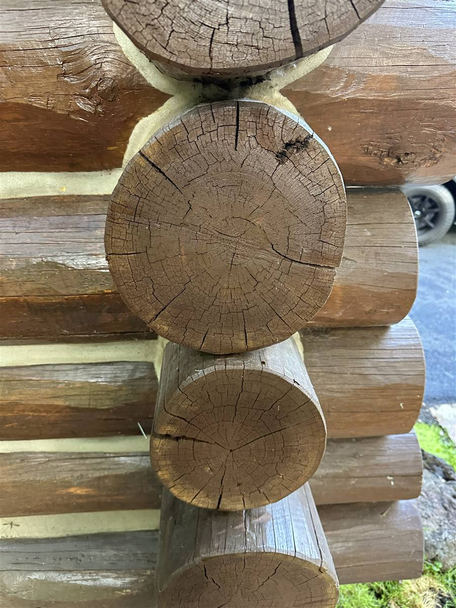

Search for chinking materials and you'll find a dozen products, three material families, and a lot of confident opinions from people who have never tooled a joint in January. Here's the working view from a crew that chinks log homes across the Wood River Valley: which materials exist, which ones we reach for, and the part of the job that matters more than any brand on a pail.

The three material families
Traditional mortar
Portland cement or lime-based mortar is what most pre-war cabins were chinked with. It's cheap and looks the part, but it's rigid — and logs move. Every season of shrink and swell cracks it a little more, and every crack is a water path. We remove far more mortar chinking than we install. The only case for it today is historic restoration where authenticity is the requirement, with eyes open about the upkeep.
Regular caulk pressed into service
Standard exterior caulk in a chinking joint is the most common failure we're called out to fix. It isn't formulated for joints that are two to five inches wide and move all year — it tears, lets go of the log line, and hides the water it's letting in. If you've just learned what chinking is, the practical distinction is this: caulk is for narrow, quiet joints; chinking is for wide, moving ones.
Synthetic (acrylic) chinking
This is the modern standard and what we install: an elastic acrylic compound that looks like mortar but stretches with the wall. It bonds to the log faces above and below the joint, tools to a clean traditional profile, and takes stain-adjacent color so the joint lines stay crisp against the wood. Installed over proper backer rod, quality synthetic chinking is a 15–20 year material in our climate.
The brands you'll actually encounter
Three names dominate American log home work: Sashco (Log Jam), Perma-Chink Systems, and Weatherall. All three make professional-grade acrylic chinking, and honestly, all three make a good product — the differences that matter on a wall are texture, color range, and how each one tools in cold weather. Sashco's Log Jam and Perma-Chink are the two we see and use most in Idaho; both have decades of proven service in mountain climates. What we don't recommend is the bargain shelf: unbranded "log home sealant" saves a couple hundred dollars on a job whose labor costs thousands, and it's the first thing to fail.
Our honest take: homeowners agonize over brand choice, but we've never traced a chinking failure to choosing Log Jam over Perma-Chink or vice versa. Every failure we see traces to the wrong material family, missing backer rod, or bad prep.
Backer rod: the material nobody sees
Behind every good chinking line is a foam backer rod sized to the joint. It does three jobs: controls the chinking's depth so it cures to the right thickness, gives it something to tool against, and — critically — creates two-point adhesion. Chinking should bond to the log above and the log below, and nothing else. Bonded on three sides, it can't stretch, and it tears exactly like caulk does. When old chinking is failing early, missing or wrongly-sized backer rod is one of the first things we check for.
Why prep decides the lifespan
The best pail of chinking money can buy will fail over dusty logs, failed old material, or wood that's already wet. Real prep means cutting out failed sections cleanly, getting to sound and dry wood, setting fresh backer rod, and applying in the temperature window the product cures in — which in the Wood River Valley means planning around the season, not the invoice date. It's the least visible part of the job and most of the labor, which is why it's where cheap quotes save their money. The chinking cost guide breaks down how that shows up in pricing.
What we'd tell a neighbor
Buy a professional-grade acrylic chinking from one of the major brands, insist on backer rod and real prep, and spend your attention on the applicator, not the label. If you'd rather hand the whole question to the crew that does this every season, our chinking and staining service covers assessment through application — call 208-897-8100.